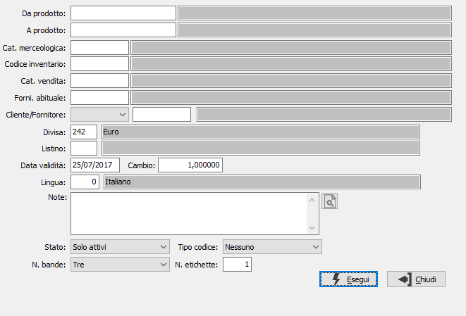

Stampa etichette articoli
Il programma consente di stampare le etichette dei prodotti su tre differenti tipologie di etichette in relazione al numero di bande da utilizzare.

DA PRODOTTO: eventuale codice dell'articolo, presente in anagrafica Prodotti, da cui si desidera iniziare la stampa. Confermando a vuoto, la stampa inizia con il primo prodotto valido. Sul campo è attiva la ricerca (F9) sull’anagrafica prodotti.
A PRODOTTO: eventuale codice dell'articolo, presente in anagrafica Prodotti, a cui si desidera terminare la stampa. Confermando a vuoto, la stampa termina con l’ultimo valido. Sul campo è attiva la ricerca (F9) sull’anagrafica prodotti.
CAT. MERCEOLOGICA: eventuale codice della categoria merceologica per cui si vuole effettuare la stampa. Sul campo sono attive le funzioni di ricerca (F9) sulla tabella stessa.
CODICE INVENTARIO: eventuale codice Inventario per cui si vuole effettuare la stampa. Sul campo sono attive le funzioni di ricerca (F9) sulla tabella stessa.
CAT. VENDITA: eventuale codice della categoria di vendita per cui si vuole effettuare la stampa. Sul campo sono attive le funzioni di ricerca (F9) sulla tabella stessa.
FORNITORE ABITUALE: eventuale codice del fornitore abituale del prodotto per cui si vuole effettuare la stampa. Sul campo sono attive le funzioni di ricerca (F9) sulla tabella stessa.
CODICE CLIENTE/FORNITORE: eventuale codice cliente o fornitore per cui si vuole effettuare la stampa. Sul campo sono attive le funzioni di ricerca (F9) sulla tabella stessa. Saranno utilizzati per la stampa gli eventuali dati collegati al prodotto (codice prodotto, descrizione, eventuale barcode).
DIVISA: eventuale codice divisa per la determinazione del prezzo. Sul campo sono attive le funzioni di ricerca (F9) sulla tabella stessa.
LISTINO: eventuale codice listino per la determinazione del prezzo. Sul campo sono attive le funzioni di ricerca (F9) sulla tabella stessa.
DATA VALIDITÀ: eventuale data di validità del listino utilizzato per la determinazione del prezzo.
CAMBIO: eventuale cambio verso la divisa di gestione, utilizzato per la conversione del prezzo dalla divisa del listino.
LINGUA: eventuale codice lingua per la traduzione delle descrizioni. Sul campo sono attive le funzioni di ricerca (F9) sulla tabella stessa.
NOTE: campo note da aggiungere come prima riga alla stampa. Il pulsante consente di selezionare dei testi già memorizzati.
STATO: definisce quali articoli considerare. Valori possibili: Tutti; Solo attivi; Solo obsoleti.
TIPO CODICE: definisce se stampare il codice a barre del prodotto, qualora sia presente ed il tipo di codice da utilizzare.
N. BANDE: definisce il numero di colonne su cui effettuare la stampa.
N. ETICHETTE: definisce il numero di etichette da stampare per ogni prodotto.